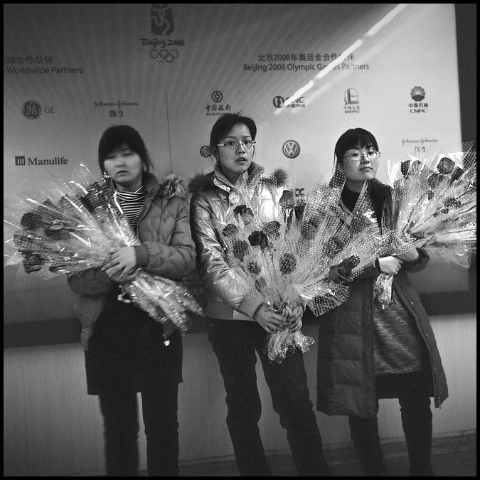
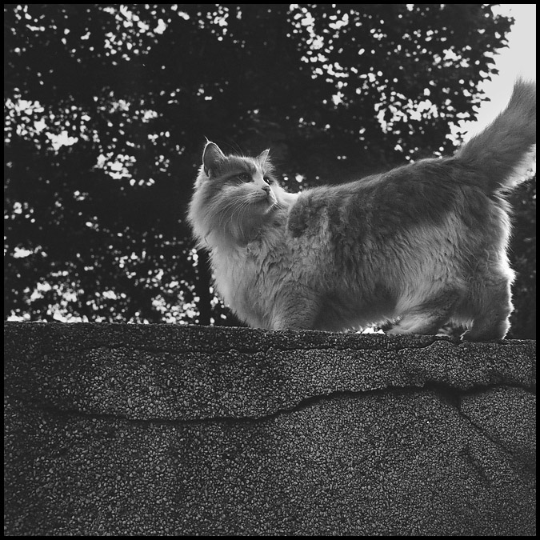
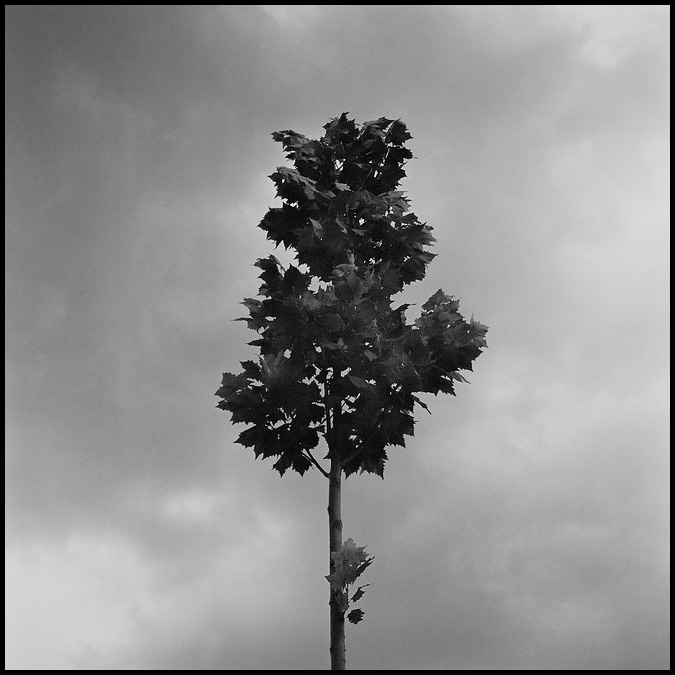

器材库 > 黑白片 > HP5

该产品没有存档的规格参数
立顿红茶包2013-09-24 13:414.56 分
性价比 5.00色彩还原 4.50分辨率 4.50锐利度 4.50颗粒度 4.50反差 4.00色饱和度 4.50宽容度 5.00倒易率允许 4.50
flyingdustvictor2013-01-18 12:324.39 分
性价比 3.50色彩还原 4.00分辨率 4.50锐利度 4.00颗粒度 4.50反差 5.00色饱和度 4.00宽容度 5.00倒易率允许 5.00
立顿红茶包2012-05-02 16:16
上帝武装2009-09-11 23:574.72 分
性价比 3.50色彩还原 5.00分辨率 4.50锐利度 5.00颗粒度 5.00反差 4.50色饱和度 5.00宽容度 5.00倒易率允许 5.00
五十四军2009-02-10 12:444.67 分
性价比 4.50色彩还原 5.00分辨率 4.50锐利度 4.50颗粒度 4.50反差 5.00色饱和度 4.50宽容度 5.00倒易率允许 4.50
醒目2008-06-20 23:464.56 分
性价比 4.50色彩还原 4.50分辨率 4.50锐利度 4.50颗粒度 5.00反差 4.50色饱和度 4.50宽容度 4.50倒易率允许 4.50
迅2008-02-17 23:494.89 分
性价比 4.00色彩还原 5.00分辨率 5.00锐利度 5.00颗粒度 5.00反差 5.00色饱和度 5.00宽容度 5.00倒易率允许 5.00
古世2007-11-23 02:195 分
性价比 5.00色彩还原 5.00分辨率 5.00锐利度 5.00颗粒度 5.00反差 5.00色饱和度 5.00宽容度 5.00倒易率允许 5.00



肉牛2007-10-30 18:344.5 分
性价比 4.50色彩还原 5.00分辨率 4.00锐利度 4.00颗粒度 4.50反差 4.00色饱和度 5.00宽容度 5.00倒易率允许 4.50
Tianmou2007-08-08 00:404.39 分
性价比 4.00色彩还原 4.00分辨率 4.50锐利度 4.50颗粒度 4.00反差 4.50色饱和度 4.00宽容度 5.00倒易率允许 5.00
该产品暂无存档的产品图
评测 / 相关文章
该产品暂无存档的评测文章